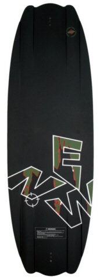

Onyx
245,50 €
Nach unzähligen Prototypen und hunderten Test
fahrten, haben wir das Onyx endlich fertig gestellt.
Ike hat uns bestätigt, dass dieses Board so fährt wie
kein anderes. Dieses Board wird die nachkommende
Generation stark beeinflussen.
Ike und der Rest Team haben nach etwas gesucht, mit
dem man etwas anders Free Riden kann. Das haben
sie jetzt bekommen. Mit unserem einzigartigen und
patentierten Quadra Glide System hat dieses Board ein
unglaublichen Kantenhalt. Die neue Rocker Linie, die
wir nur Stage nennen, steht für explosives Abspringen
von der Kante und butterweiche Landungen.
Probier das Board aus und erzähl uns was du darüber
denkst. Wir denken, dass ist die Zukunft und hoffen, du
denkst genauso. Designed von Ike und gefahren von ihm
und dem gesamten X-Star Team. Das Board wird mit
einer Limited Edition Base Graphik ausgeliefert. Insge-
samt 4 Stück. 20 dieser Boards werden zusätzlich vom
gesamten Team unterzeichnet, vielleicht bist du ja einer
der glücklichen die ein solches Board aus der Packung
ziehen.
Zurück zur Angebotsseite